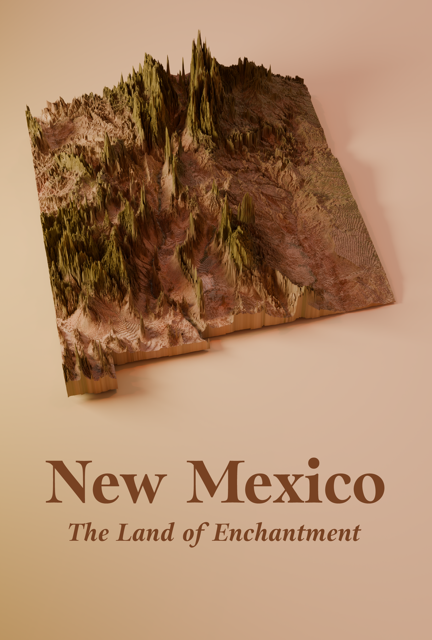
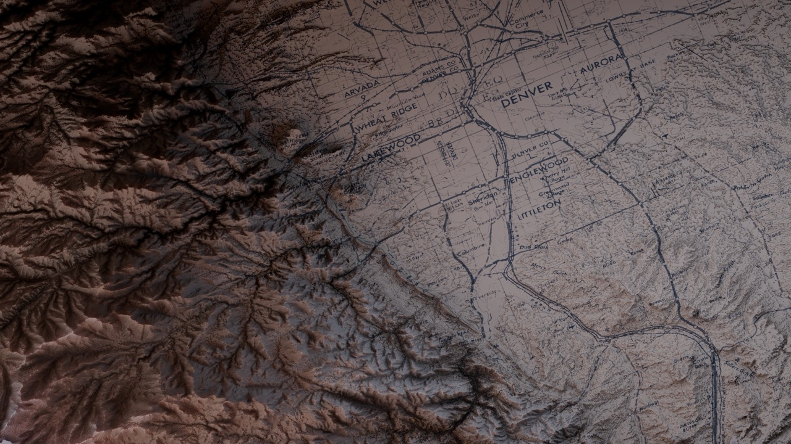
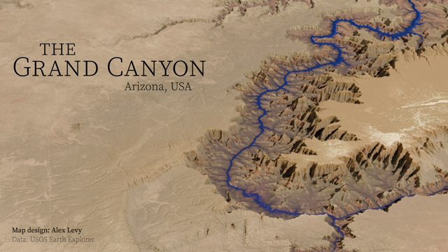
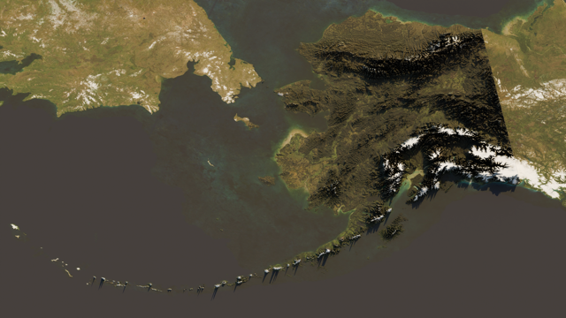
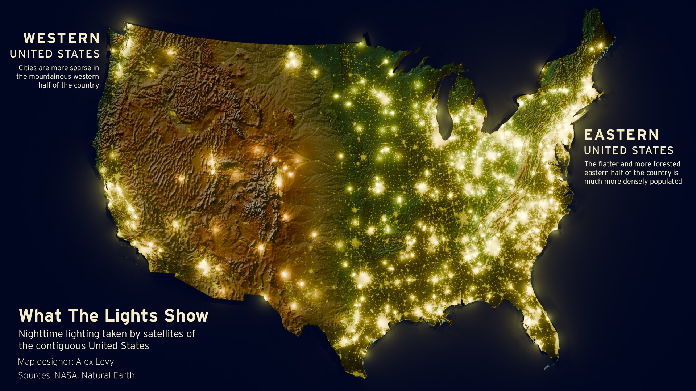

Hi, I'm Alex!
A relentless problem solver and creative-minded systems thinker, I am a UX designer who also enjoys branding, motion design, and data visualization. While working at IBM, I have shown my enthusiasm and aptitude for immersing myself into complex problems, and I especially love projects that merge design with data and technology. For fun, I explore cartography, from mapping the relationship between voting and education, to visualizing the terrain of the Swiss Alps.
Download resumePhoto by Arthur Maiorella
For fun, I like to make maps!





I love making maps because I can visualize beautiful landscapes that normally can only be seen from high above! I also love making maps to tell data-driven stories.